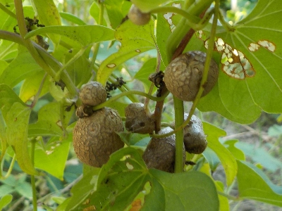
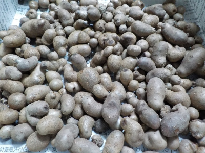
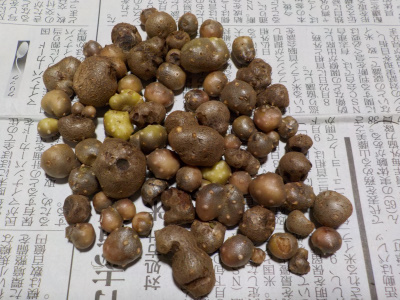
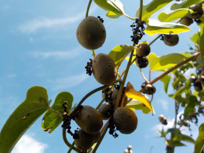
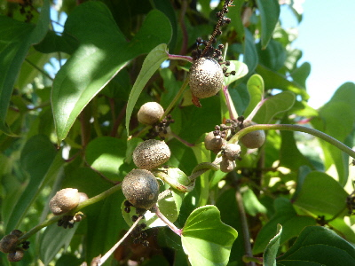

遊びで植物を育てよう
2024/09/29
今年はムカゴが少なかったです。

育てているわけではないので少なくても仕方ないですが、収穫が少ないのはガッカリしますね。
この貴重なムカゴは何して食べようかな。
【ムカゴTOP】
【野菜TOP】
【園芸TOP】
2022/09/18
台風が来るらしいのでムカゴを収穫しました。

明日台風が来るようなので小雨の中収獲しました。
これだけあったら当分の間持ちそうです。
ムカゴは個体によって味の当たり外れが大きい気がします。
【ムカゴTOP】
【野菜TOP】
【園芸TOP】
2019/09/05
ムカゴを収穫しました。
毎年勝手に育っていたんですが、今年はあんまり育っていませんでした。

つるがあまり成長してなくて、実の数も少なかったです。
何かの条件が悪かったんでしょうね。
数少ない貴重なムカゴはどうやって食べようかな。
【ムカゴTOP】
【野菜TOP】
【園芸TOP】
2018/09/23
ムカゴが大きくなりました。
20日前にもムカゴを採取しましたが、その時よりもだいぶ大きくなっていました。

今ぐらいが丁度いい大きさです。
大きく育ったぶんだけ収穫しました。
まだ沢山残っているので、当分食べれそうです。（大型台風とか来ないといいです。）
【ムカゴTOP】
【野菜TOP】
【園芸TOP】
2018/09/02
台風が来るようなのでムカゴを収穫しました。
強風で落ちちゃうともったいないので収穫しました。

まだ成長途中かな？今年はつぶが小さいです。
風でつるが揺れそうなところを中心に収穫しました。
【ムカゴTOP】
【野菜TOP】
【園芸TOP】
2018/05/12
ムカゴを植えました。
園芸本に、肥料袋にむかごを植えると収穫がらくちんとあったので試してみました。

このまま放置して、たまに水をやればいいのかな？
どう育つかたのしみです。
【ムカゴTOP】
【野菜TOP】
【園芸TOP】
特に面倒をみていないものは季節感があっていいですね。
【おいしいものを食べよう。】【しっかり寝よう。】
【ソロ活をしよう!】【季節感のあることをしよう。】【動画視聴はほどほどに。】【当サイトの全てのコンテンツは無断転載禁止です。】